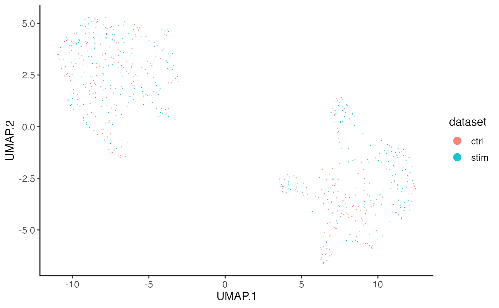
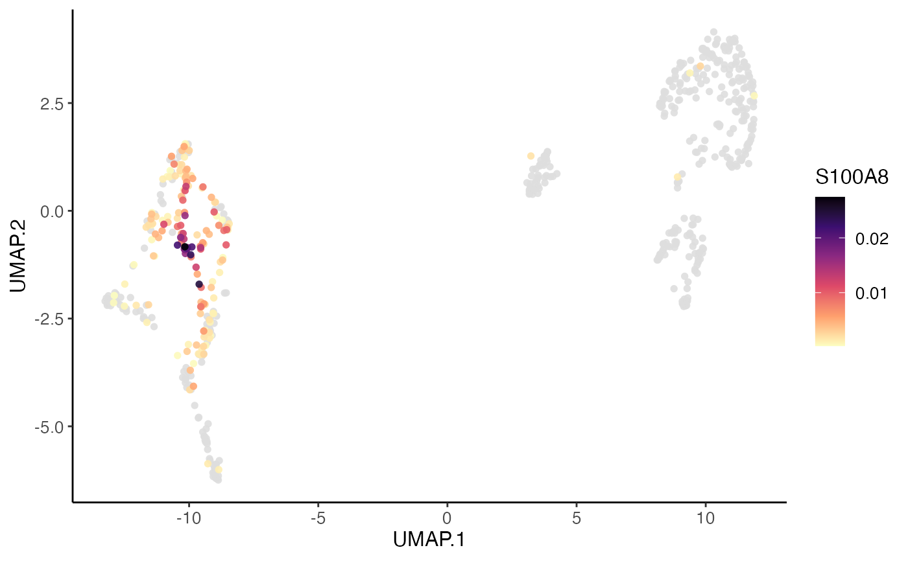
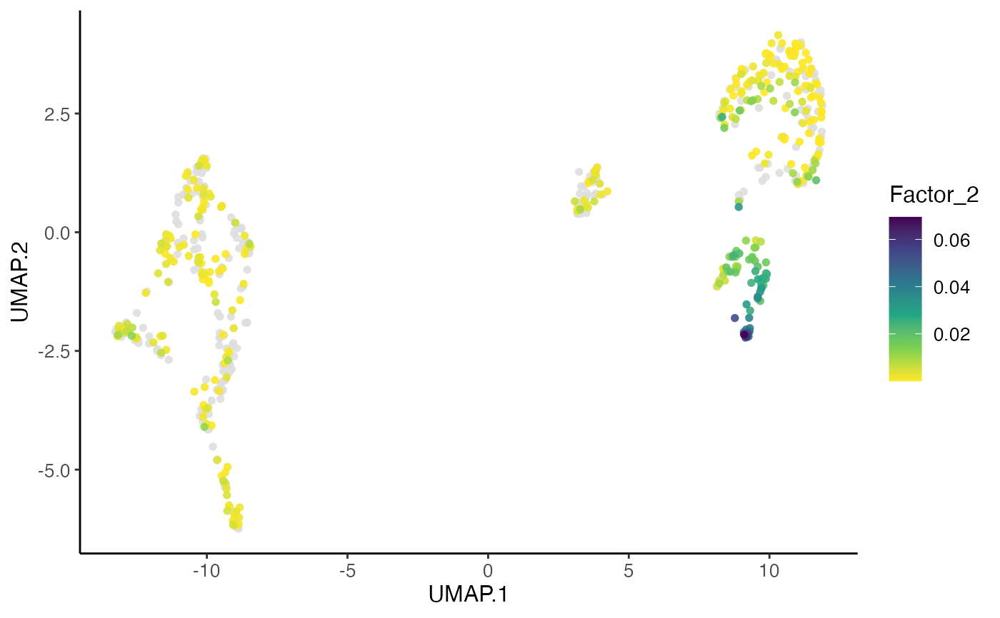

This function allows for using available cell metadata to build
the x-/y-axis. Available per-cell data can be used to form the color/shape
annotation, including cell metadata, raw or processed gene expression, and
unnormalized or aligned factor loading. Multiple coloring variable is allowed
from the same specification of slot, and this returns a list of plots
with different coloring values. Users can further split the plot(s) by
grouping on cells (e.g. datasets).
plotCellScatter(
object,
x,
y,
colorBy = NULL,
slot = c("cellMeta", "rawData", "normData", "scaleData", "H.norm", "H", "normPeak",
"rawPeak"),
colorByFunc = NULL,
cellIdx = NULL,
splitBy = NULL,
shapeBy = NULL,
titles = NULL,
...
)A liger object
Available variable name in cellMeta slot to look for
the dot coordinates. See details.
Available variable name in specified slot to look for
color annotation information. See details. Default NULL generates
all-black dots.
Choose the slot to find the colorBy variable. See details.
Default "cellMeta".
Default NULL. A function object that expects a
vector/factor/data.frame retrieved by colorBy as the only input, and
returns an object of the same size, so that the all color "aes" are replaced
by this output. Useful when, for example, users need to scale the gene
expression shown on plot.
Character, logical or numeric index that can subscribe cells.
Missing or NULL for all cells.
Character vector of categorical variable names in
cellMeta slot. Split all cells by groupings on this/these variable(s)
to produce a scatter plot containing only the cells in each group. Default
NULL.
Available variable name in cellMeta slot to look for
categorical annotation to be reflected by dot shapes. Default NULL.
Title text. A character scalar or a character vector with as
many elements as multiple plots are supposed to be generated. Default
NULL.
More plot setting arguments. See .ggScatter and
.ggplotLigerTheme.
A ggplot object when a single plot is intended. A list of ggplot
objects, when multiple colorBy variables and/or splitBy are
set. When plotly = TRUE, all ggplot objects become plotly (htmlwidget)
objects.
Available option for slot include: "cellMeta",
"rawData", "normData", "scaleData", "H.norm"
and "H". When "rawData", "normData" or
"scaleData", colorBy has to be a character vector of feature
names. When "H.norm" or "H", colorBy can be any valid
index to select one factor of interests. Note that character index follows
"Factor_[k]" format, with replacing [k] with an integer.
When "cellMeta", colorBy has to be an available column name in
the table. Note that, for colorBy as well as x, y,
shapeBy and splitBy, since a matrix object is feasible in
cellMeta table, using a column (e.g. named as "column1" in a
certain matrix (e.g. named as "matrixVar") should follow the syntax of
"matrixVar.column1". When the matrix does not have a "colname"
attribute, the subscription goes with "matrixVar.V1",
"matrixVar.V2" and etc. Use "UMAP.1", "UMAP.2",
"TSNE.1" or "TSNE.2" for the 2D embeddings generated with
rliger package. These are based on the nature of as.data.frame method
on a DataFrame object.
plotCellScatter(pbmcPlot, x = "UMAP.1", y = "UMAP.2",
colorBy = "dataset", slot = "cellMeta",
labelText = FALSE)
#> Wed Dec 20 15:50:48 2023 ... Plotting feature: dataset, on 600 cells...

plotCellScatter(pbmcPlot, x = "UMAP.1", y = "UMAP.2",
colorBy = "S100A8", slot = "normData",
dotOrder = "ascending", dotSize = 2)
#> Wed Dec 20 15:50:48 2023 ... Plotting feature: S100A8, on 600 cells...

plotCellScatter(pbmcPlot, x = "UMAP.1", y = "UMAP.2",
colorBy = 2, slot = "H.norm",
dotOrder = "ascending", dotSize = 2,
colorPalette = "viridis")
#> Wed Dec 20 15:50:48 2023 ... Plotting feature: Factor_19, on 600 cells...
